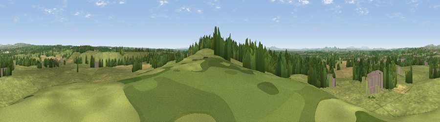

Viewpoint near Stoke Works
#20346 in England · top 33% of its area beats it · near Stoke Works · path 161 mWhere it is
The exact computed spot (SO 95825 65625). Click the marker for map links.
Public access: the nearest public right of way is about 161 m away — the final stretch may cross private land. Computed from Natural England's CRoW access layer and OpenStreetMap rights of way — not the legal definitive map. Always verify locally.
The view, rendered

A 360° render of this exact spot computed from the terrain model, tree cover and land cover — summer colours, afternoon light, calibrated against photographs of famous viewpoints. Real trees, hedges and buildings will differ in detail.
The panorama
Grey silhouette: terrain skyline in each direction (720 bearings, Earth curvature and refraction included). Dashed green: skyline with trees (+15 m) and buildings (+8 m) as obstacles. Blue strip: how far the ground is visible on each bearing.
Where the view opens
Wedge length = distance to the farthest visible ground on that bearing (vegetation-aware). Rings at 10, 25 and 50 km.
What fills the view
72% grassland · 12% cropland · 12% woodland · 3% built-up
Angular shares of the visible panorama (visual magnitude), not map area. Landscape diversity 0.37 (0–1 Shannon).
Key numbers
More beautiful places nearby
The staircase of upgrades: each row has a higher view potential than everything closer. Driving times are estimates from straight-line distance, calibrated against real road routing — check an actual route before setting out.
| Place | Direction | Drive | Score |
|---|---|---|---|
| Viewpoint near Hanbury | S · 1 km | ~3 min | 53.6 |
| Viewpoint near Hanbury | S · 1 km | ~4 min | 55.2 |
| Viewpoint near Hanbury | S · 4 km | ~10 min | 62.1 |
| Viewpoint near Inkberrow | SSE · 10 km | ~20 min | 62.8 |
| Holywell Hill | N · 11 km | ~22 min | 69.4 |
| Windmill Hill | N · 12 km | ~23 min | 73.2 |
| Viewpoint near Clent | N · 15 km | ~27 min | 74.3 |
| Viewpoint near Abberley | W · 20 km | ~33 min | 77.5 |
52.28874, -2.06263 · source: screening · position refined by local search. Computed location — check access rights before visiting.